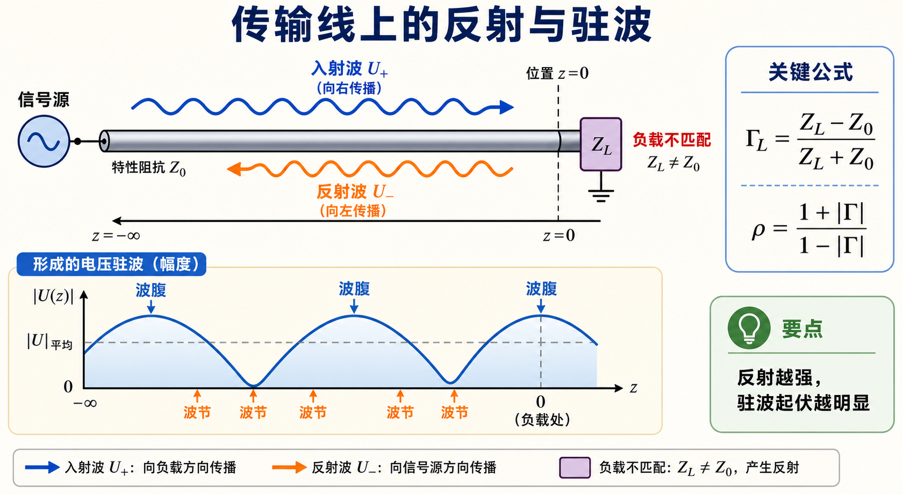
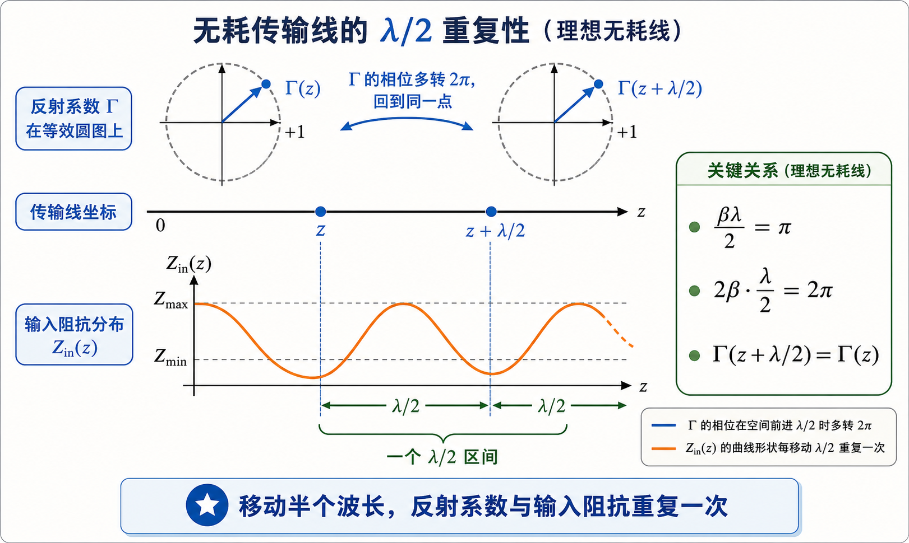
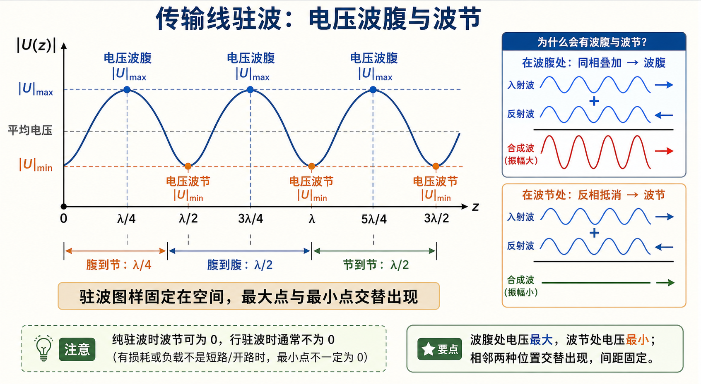

第一次作业 · Lec03§
导航： 总目录 · 符号与导读 · Lec01 · Lec02 · Lec03 · Lec04 · Lec05 · 附录
Lec03 作业§
题给（$z$ 自负载起算）：
$$ U(z)=U_L\cos\beta z+\mathrm{j}I_L Z_c\sin\beta z,\quad I(z)=I_L\cos\beta z+\mathrm{j}\frac{U_L}{Z_c}\sin\beta z. $$
第 1 题§
（对应大纲 Lec03 作业 第 1 题；§1.3–1.4 附近。）
题目复述§
写出负载反射系数 $\Gamma$、驻波比 $\rho$、输入阻抗 $Z_{\mathrm{in}}$ 的定义与主要表达式，并说明它们之间的相互关系（可由题给 $U(z)$、$I(z)$ 推导 $Z_{\mathrm{in}}(z)$，也可用行波分解建立 $\Gamma$ 与 $\rho$）。

这道题的核心是把三个量连成一条链：负载不匹配先产生反射系数 $\Gamma$，入射波与反射波叠加形成驻波比 $\rho$，再由参考面处的 $\Gamma(z)$ 换算输入阻抗 $Z_{\mathrm{in}}(z)$。
详细思路§
- 用 $Z_L=U_L/I_L$ 将 $U(z)/I(z)$ 化简为标准的 $\tan\beta z$ 形式。
- 行波分解下由边界得 $\Gamma_L$，再由驻波几何得 $\rho$ 与 $|\Gamma|$ 关系。
- 用 $Z_{\mathrm{in}}=Z_c(1+\Gamma)/(1-\Gamma)$ 统一 $\Gamma$ 与 $Z_{\mathrm{in}}$。
一步步解答§
定义：
- $\displaystyle \Gamma_L=\frac{U^-}{U^+}\Big|_{z=0}=\frac{Z_L-Z_c}{Z_L+Z_c}$。
- $\Gamma(z)=\Gamma_L\mathrm{e}^{-\mathrm{j}2\beta z}$（与教材 $z$ 正向约定一致即可）。
- $\displaystyle \rho=\frac{|U|_{\max}}{|U|_{\min}}=\frac{1+|\Gamma|}{1-|\Gamma|}$。
- $\displaystyle Z_{\mathrm{in}}(z)=\frac{U(z)}{I(z)}=Z_c\frac{Z_L+\mathrm{j}Z_c\tan\beta z}{Z_c+\mathrm{j}Z_L\tan\beta z}$。
由题给式求 $Z_{\mathrm{in}}(z)$：
$$ Z_{\mathrm{in}}(z)=\frac{U(z)}{I(z)}=Z_c\,\frac{U_L\cos\beta z+\mathrm{j}I_L Z_c\sin\beta z}{I_L\cos\beta z+\mathrm{j}(U_L/Z_c)\sin\beta z} =Z_c\,\frac{Z_L+\mathrm{j}Z_c\tan\beta z}{Z_c+\mathrm{j}Z_L\tan\beta z}, $$
其中用了 $Z_L=U_L/I_L$ 并分子分母同除以 $\cos\beta z$。
行波分解：$U(z)=U^+\mathrm{e}^{\mathrm{j}\beta z}+U^-\mathrm{e}^{-\mathrm{j}\beta z}$（指数约定与教材一致），$U_L=U^++U^-$，$I_L=(U^+-U^-)/Z_c$，得 $\Gamma_L=U^-/U^+=(Z_L-Z_c)/(Z_L+Z_c)$；由 $|U|_{\max/\min}$ 与 $|U^+|,|U^-|$ 得 $\rho=(1+|\Gamma|)/(1-|\Gamma|)$。
关系：
$$ |\Gamma|=\frac{\rho-1}{\rho+1},\quad Z_{\mathrm{in}}=Z_c\frac{1+\Gamma(z)}{1-\Gamma(z)},\quad \Gamma(z)=\frac{Z_{\mathrm{in}}(z)-Z_c}{Z_{\mathrm{in}}(z)+Z_c}. $$
标准解答§
- $\Gamma_L=(Z_L-Z_c)/(Z_L+Z_c)$，$\Gamma(z)=\Gamma_L\mathrm{e}^{-\mathrm{j}2\beta z}$。
- $\rho=(1+|\Gamma|)/(1-|\Gamma|)$，$|\Gamma|=(\rho-1)/(\rho+1)$。
- $Z_{\mathrm{in}}(z)=Z_c\dfrac{Z_L+\mathrm{j}Z_c\tan\beta z}{Z_c+\mathrm{j}Z_L\tan\beta z}=Z_c\dfrac{1+\Gamma(z)}{1-\Gamma(z)}$。
常见疑惑点§
- 疑惑： $\Gamma(z)$ 的指数是 $-\mathrm{j}2\beta z$ 还是 $+\mathrm{j}2\beta z$？解答： 与 $z$ 正向定义及行波写法绑定；本解答与 符号与导读 一致，全题统一即可。
第 2 题§
（对应大纲 Lec03 作业 第 2 题。）
题目复述§
什么是无耗传输线上的 $\lambda/2$ 重复性？

对 $\Gamma(z)$ 来说，参考面移动 $\lambda/2$ 会让指数项多转 $2\pi$，所以反射系数回到原点；$Z_{\mathrm{in}}$ 由 $\Gamma$ 决定，也随之每隔 $\lambda/2$ 重复。
详细思路§
$\beta\lambda/2=\pi$，故 $\tan\beta z$、$\mathrm{e}^{-\mathrm{j}2\beta z}$ 均具有周期 $\lambda/2$。
一步步解答§
无耗线上
$$ Z_{\mathrm{in}}(z+\lambda/2)=Z_{\mathrm{in}}(z),\qquad \Gamma(z+\lambda/2)=\Gamma(z), $$
因为 $\mathrm{e}^{-\mathrm{j}2\beta(z+\lambda/2)}=\mathrm{e}^{-\mathrm{j}2\beta z}\mathrm{e}^{-\mathrm{j}2\pi}=\mathrm{e}^{-\mathrm{j}2\beta z}$。
标准解答§
- 沿 $z$ 增加 $\lambda/2$，$Z_{\mathrm{in}}$ 与 $\Gamma$ 重复（$\lambda/2$ 周期）。
常见疑惑点§
- 疑惑： 波腹波节间距也是 $\lambda/2$，和 $\lambda/2$ 重复性同一回事吗？解答： 相关但不等同：前者是驻波图样空间周期；后者是阻抗/反射系数沿线周期，二者在无耗线上都由 $\beta\lambda/2=\pi$ 决定。
第 3 题§
（对应大纲 Lec03 作业 第 3 题。）
题目复述§
终端匹配时，线上为何呈现行波？

匹配的意思不是“负载很大”或“负载很小”，而是 $Z_L$ 正好等于这条线的 $Z_c$。此时负载把入射能量吸收掉，不再把能量反射回源端。
详细思路§
匹配 $\Rightarrow$ $\Gamma_L=0$ $\Rightarrow$ 无反射波 $\Rightarrow$ 单向行波。
一步步解答§
匹配指 $Z_L=Z_c$，故 $\Gamma_L=0$，无反射波；线上仅余入射方向的行波分量，$U(z)$ 可写为单一行波形式，能量全部进入负载。
标准解答§
- $Z_L=Z_c$ $\Rightarrow$ $\Gamma_L=0$ $\Rightarrow$ 行波（无驻波干涉项）。
常见疑惑点§
- 疑惑： 匹配时 $Z_{\mathrm{in}}(z)$ 是否处处等于 $Z_c$？解答： 无耗无限长或匹配负载时，从任一点向负载看若等效为 $Z_c$，则主线上可维持行波；有限长线若仅终端匹配，沿线 $Z_{\mathrm{in}}(z)$ 一般仍为 $z$ 的函数，但 $|\Gamma(z)|\equiv 0$。
第 4 题§
（对应大纲 Lec03 作业 第 4 题。）
题目复述§
说明电压波腹、波节的条件，以及相邻波腹与波节、相邻两波腹（或两波节）之间的距离。

看图时记住两个距离：腹到节是四分之一波长，腹到腹或节到节是半个波长。波节是否真的为零，要看是不是纯驻波。
详细思路§
驻波由入射与反射叠加；波腹为同相叠加最大，波节为反相抵消最深；相位沿 $z$ 变化 $\pi$ 对应距离 $\lambda/4$。
一步步解答§
波腹：入射与反射同相叠加，$|U|$ 最大。波节：反相抵消最甚，$|U|$ 最小（纯驻波时可为零）。
相邻波腹与波节相距 $\lambda/4$；相邻两波腹或两波节相距 $\lambda/2$。
标准解答§
- 波腹：$|U|$ 最大点；波节：$|U|$ 最小点。
- 腹—节间距：$\lambda/4$；腹—腹或节—节：$\lambda/2$。
常见疑惑点§
- 疑惑： 波节一定为零吗？解答： 纯驻波（$|\Gamma|=1$）时可为零；行驻波时 $|U|_{\min}\neq 0$。